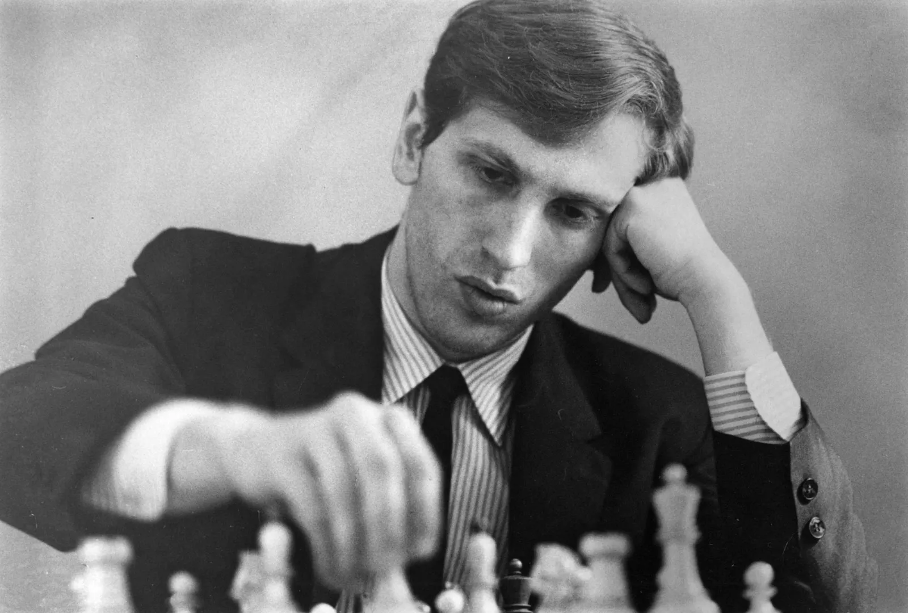

Garry Kasparov
Garry Kasparov est largement considéré comme l'un des plus grands joueurs d'échecs de tous les temps. Il est devenu le plus jeune champion du monde d'échecs incontesté en 1985 à l'âge de 22 ans en battant le champion en titre Anatoly Karpov. Kasparov a détenu le titre mondial officiel de la FIDE jusqu'en 1993, et le titre mondial "Classical" jusqu'à sa retraite en 2005. Il est également connu pour ses matchs contre l'ordinateur Deep Blue d'IBM.
Magnus Carlsen
Magnus Carlsen, originaire de Norvège, est l'actuel champion du monde d'échecs et est considéré comme l'un des meilleurs joueurs de l'histoire. Il a remporté le championnat du monde en 2013 en battant Viswanathan Anand et a défendu son titre avec succès plusieurs fois depuis.
Bobby Fischer
Bobby Fischer est un joueur d'échecs américain qui est devenu célèbre en devenant champion du monde en 1972 après avoir battu Boris Spassky dans un match légendaire connu sous le nom de "Match du Siècle". Fischer est connu pour sa personnalité controversée et son immense talent aux échecs.
Anatoly Karpov

Anatoly Karpov est un grand maître russe qui a été champion du monde d'échecs de 1975 à 1985, puis champion du monde "Classical" de 1993 à 1999. Il est célèbre pour son style de jeu positionnel et ses nombreux matchs contre Garry Kasparov.
Viswanathan Anand
Viswanathan Anand, originaire d'Inde, a été champion du monde d'échecs de 2007 à 2013. Anand est apprécié pour son style de jeu polyvalent et son longévité au plus haut niveau des compétitions d'échecs. Il a également popularisé les échecs en Inde.